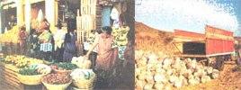
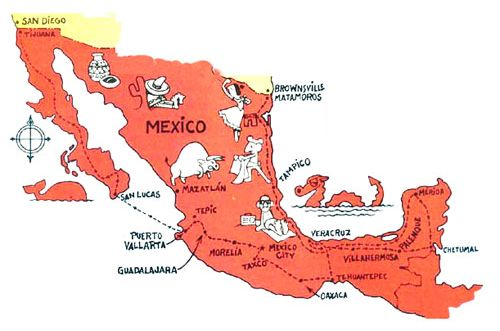

Biking Through Mexico
Nancy and Phil Zito biked from Tijuana to Matamoros on $5.00 per day. They camped along the way. Spare parts for the bicycle, clothing, food, and other pertinent bits of information are discussed.
By Nancy Zito
January/February 1980
For $5.00 a day, there's no adventure quite like...
Last winter, my husband Phil and I (with our three-year-old daughter Amanda) bicycled down one side of Mexico and up the other. Our trip began in Tijuana the day before Thanksgiving, and ended in Matamoros-on the Texas border-during the last week in February. It was a delightful and sometimes difficult experience, but certainly never dangerous (as many well-meaning advisers had predicted the jaunt would be).
The majority of the Mexican people, we discovered, live their whole lives with far less material abundance than many of us in wealthier lands throw away in a year's time. Yet these same "poor" people-who seem to value life itself, rather than the comforts it might bring-were extremely generous to us, often to the point of sharing their homes and food.
FANCY TRANSPORTATION
We purchased new Raleigh Gran Prix bicycles in preparation for the trip. Our rationale for such extravagance was that these bikes-with their sturdier frames and larger fifth gears for hill climbing-were superior to our old models. Also, by having identical bicycles, we could be sure that whatever spare parts we were able to take along would accommodate either machine. Our three-person backpack tent and full-size frame packs were also new, and we carried two down sleeping bags and one made of PolarGuard.
The bikes, of course, did limit the amount of equipment we could pack . . . but even so, the costliness of our gear-as compared to the bare necessities owned by most of the people we encountered-often made us feel that our possessions were somewhat excessive.
"How much did the bike cost?" was a constant question, for-while many Mexicans propel themselves on two wheels-their cycles are usually the one-gear-fat tire variety. And, when asked the price of one of our sleeping bags, we found ourselves somewhat ashamed to admit that we'd spent $60 on an item that-to the Inquirer-seemed to be little more than a fancy blanket.
Yet despite the occasional unpleasant feeling that our belongings were disproportionate to our needs, we didn't-on the whole-regret having brought along the items we'd chosen.
CAMPING GEAR
We carried a "foul weather camping" tent (which we only used four times, as the sky was clear for most of our three-month trip), a ground cover, the three-sleeping bags, a length of lightweight nylon rope, some tent-patching material, a sheath knife, a spoon, a fork, a pair of chopsticks, a one-quart saucepan, assorted matches, our backpacks with rain covers, a child's day pack, two one-quart water bottles (we added another half-gallon container later), and a one-burner pack stove that burned unleaded gasoline. (The cooker's ability to operate on motor fuel proved to be a boon, since "lead-free" was often easier to find than alcohol or white gas.)
There are few formal "campgrounds" in Mexico, so we simply scouted out "sleep sites" that offered some cover between us and the road ... in the form of either an embankment or vegetation such as sugar cane, agave, cactus, mesquite, etc. On the rare occasions that we couldn't find a likely camping spot, we just asked permission to bed down in someone's yard.
Though the nights were clear, the heavy Mexican dew often soaked our gear by morning. We found it a lot easier, however, to simply dry the bags daily . . . rather than go through the rigamarole of erecting and dismantling the tent. There was some cold, wet weather toward the end of our journey, as well as some rain while we were in Veracruz and Villahermosa . . . and as a result of such inclement weather (infrequent as it was), we concluded that the tent had been a wise item to take along.
When we were ready to bed down, we'd set the packs up back to back (to prevent rodents and insects from crawling inside) and shield them with the rain covers. The ground cloth was used under the sleeping bags (and-when we needed it-the tent) to protect them from sharp objects such as cactus barbs. (As for the sleeping bags themselves, we found the PolarGuard bag to be more serviceable than were the down-filled sleepers, as It dried faster and wasn't as fragile.)
We had chosen backpacks over saddlebags, thinking that-if we left the bikes anywhere to go sightseeing-we could always take our belongings with us. Once we were in Mexico, we found little evidence of any need for such caution, though, and the packs were so cumbersome that we came to regret having to tote them everywhere!
SPARE PARTS AND TOOLS
Our supply of bicycle accessories and spares consisted of a detachable light (which also served as a flashlight), a tire pump, sponge-rubber handlebar grips (to ward off blisters), helmets, a molded-plastic child's seat, two inner tubes, two tires, 15 spokes, two screwdrivers, five metric wrenches, a spoke tool, a patch kit, small vise-grips, and a cotterless-crank key.
As might be expected, we got the most use from the wheel-repair tools. Mexican road surfaces vary considerably-from excellent to unpaved-and the frequent bumping bent the wheels enough to require periodic spoke adjustments. Also, the roads' shoulders were either narrow or nonexistent, the neighboring vegetation was abundantly needlelike, and the roadsides often doubled as a dump... all contributing factors to flat tires.
Recently, we learned of the existence of a "puncture-proof" inner tube made of heavier rubber than the standard variety. Had we equipped the bikes with these -particularly on the rear wheels-we'd have saved a lot of time and money on repairs and replacements.
CLOTHING AND PRECAUTIONS
Each of us began the journey with two shirts, two changes of pants, three pairs of socks, one jacket, and one pair of shorts. In addition, we packed a halter for me, a child's dress and sweater, two rain suits, and one poncho.
The temperatures we encountered on our trip ranged from the low 40's to the mid-90's . . . depending on altitude, location, and time of day. Our clothing was adequate for this variation except during side trips to the high inland cities of Guadalajara and Mexico City, which were a little cold for our lightweight jackets. Also-since many of the "abbreviated" women's outfits common In the United States are culturally taboo in Mexico-I could wear little true hot-weather attire.
In general, we'd dress in one set of clothes until we reached a city we wanted to see. There, in our hotel sink or tub, we'd wash our dirty laundry and change to fresh outfits. (Automatic laundries and accessible clean streams were few and far between.)
Our first-aid supplies consisted of band-aids, scissors, tweezers, adhesive tape, gauze pads, burn ointment, sting-kill swabs, mercurochrome, water purification tablets, Lomotil (to control diarrhea), an antivenin kit (for snake bites), and insect repellent.
Though we never needed most of these items, we were happy to have them along. Once, for example-while breakfasting at the home of an Indian woman who had found us breaking camp as she herded her goats to new pasture-we noticed that her grandson had a burn on his hand. Phil put some ointment on it and gave him a band-aid . . . both of which pleased the small boy no end.
TOYS AND MISCELLANY
Phil's principal occupation when he's on vacation is taking photographs. In addition, we all enjoy birdwatching, and the tropical and semitropical areas of Mexico were a paradise for such sport! Therefore, our optional-but-nice items included binoculars, two bird identification books, a camera, plenty of film (which is much less expensive in the U.S. than in Mexico), three notebooks (one for each of us), four small books for Amanda, a stuffed alligator, a soft doll, a sketch pad, India ink, pencils, crayons, and pens.
On a more practical level, we carried the official Mexican tourist map (which we obtained-as you can-from San-born's, Dept. TMEN, P.O. Box 1210, Mc-Allen, Texas 78501). The travel guides which we took with us supplemented the government publication nicely . . . particularly the Baja Book II by Tom Miller and Elmar Baxter (Baja Trail, 1977, $8.95), which contains a mile-by-mile description of the terrain, accommodations, and road conditions along the peninsular highway and suggests possible side trips on the various dirt byways. (Make sure your guide is recent. Current manuals give more accurate prices.)
Also useful were the guidebooks to Mexico published by Sunset magazine and the American Automobile Association, as well as a publication put out by the Mexican Ministry of Tourism (although the latter's price quotations were inaccurate, since the book was written before the devaluation of the peso).
Since neither Phil nor I was able to speak a word of Spanish before we left, the Importance of our Spanish-English dictionary almost goes without saying. Another invaluable reference was a book called The People's Guide to Mexico by Carl Franz (John Muir, 1972, paperback, $5.00), which is a comprehensive text on the "how" of getting along south of the border. Here too the prices are now incorrect, but that's a minor flaw, as the work is packed to overflowing with useful Information ... on everything from health to houses of ill repute. What we didn't carry-and could have used-was a good interpretive volume on the ancient cultures of Mexico, since archeological sites are legion!
Our passports proved to be nonessential (though they were useful for identification and demonstration of our American citizenship when we returned to the U.S.), since a tourist card is all that's required for an extended stay in Mexico. We got ours from the office of the Mexican Ministry of Tourism in San Diego, but they're also available at any Mexican consulate, at immigration offices along the border, and through any of the airlines that serve Mexico. (The latter, however, usually furnish cards for their customers only.)
We also had traveler's checks, and international yellow "shot cards" that listed our inoculations (smallpox and yellow fever). Even though no such immunizations are required for entry into or return from our southern neighbor, the shots seemed to represent a logical precaution . . . and so did our tetanus boosters. [EDITOR'S NOTE: From our experience, we'd also recommend typhoid, paratyphoid, and gamma globulin injections for extended travel in Mexico's back country.]
ON THE ROAD
As you can imagine, a long, slow journey such as ours did pose some problems. The first was language. Our lack of ability to communicate produced some surprises at meals and a kind of shyness on our part when anyone tried to talk to us. However, with the help of many patient people, our dictionary, and a lot of practice, we learned to converse in a halting manner and to understand much of what was being said to us.
On the other hand, our daughter appeared to be barely aware that she was listening to unaccustomed sounds. She played spontaneously with children wherever we went, chattering happily in English while her new pals used their native tongue.
Despite the language "barrier" we all made friends. The people responded as if each of us were one of their own . . . perhaps because our mode of travel made us appear so vulnerable. My only regret was that we weren't able to learn as much as I would have liked about the folks we met, but the love we exchanged was genuine and as tangible as any mastery of vocabulary and syntax could have rendered it.
Our second difficulty was the terrain. Mexico is an extremely mountainous country, and-partially because we hadn't conditioned our bodies before departure, and partially because of the weight of our packs and the sometimes excessive heat-we found ourselves walking, often for miles, uphill. Therefore, after weighing carefully the aesthetic appeal of remaining "pure" (our original intention was to travel the whole route by bicycle) against the advantages of moving more quickly part of the time, we decided-and found it easy-to hitch rides over difficult or monotonous stretches of road. We took a train once and a second class bus several times, but our limited funds made such luxuries prohibitive, since we were charged for bike storage and for our own fares.
The majority of our "hitched" rides were in the backs of trucks used for hauling goods from one city to the next or from fields to towns, and we came to view hitchhiking (which is a common practice among the poor in Mexico) as an enjoyable opportunity to get to know people and to practice our Spanish.
FOOD AND DRINK
Most of our other difficulties had to do with food and water. Our primary objective was to stay healthy while spending as little cash as possible. We found we were able to maintain a budget of 100 pesos (about $5.00) a day for the three of us. This was accomplished by buying fresh fruit and vegetables, cheese, and an occasional chicken from the markets . . . plus excellent bread from the bakeries. We usually cooked up a soup for supper on our tiny stove (even in hotels, where we prepared the meal in the bathroom next to an open window).
The measures we took to safeguard our health included buying only those vegetables and fruits we could peel, avoiding raw milk and any dairy products made from it, and purifying any water from uncertain sources.
Good drinking water was so scarce, in fact, that much of our money went to purchase fresh juice and sometimes liquados (fruit pulp blended with pasteurized milk and eggs).
Despite all our precautions, we had a few minor bouts with diarrhea and one major battle with viral hepatitis. The latter illness set us back nine days and about $100 in medication, doctor's fees, and the cost of a hotel room while we recuperated. We were fortunate, though, to get off so lightly, since in the U.S. (where diet and bed rest are the most often prescribed remedies for this illness) recovery from hepatitis sometimes takes a few months.
Actually, medicine and doctor's visits in Mexico are relatively inexpensive. Maximum drug prices are fixed by the government, and many stores charge even less than the "ceiling" rate. In addition, there're many powerful compounds that aren't available in the U.S. And while the law demands that certain medicines be issued only on receipt of a prescription, this is often not actually the practice. Many people eliminate the doctor altogether by asking the pharmacist to heal a particular complaint . . . and the Mexican druggist is, as a rule. knowledgeable and helpful. He'll even administer-at a small cost-an injection.
"THE GOOD OLD WAYS"
Basically, much of Mexico exists as it did hundreds of years ago. People still ride horses to get from place to place, and-in the south-it's not unusual to see young boys driving a team of oxen to the fields. You see, Mexican children are expected to help their parents, and they do so cheerfully and with a kind of pride . . . for the family is still an important institution to most people.
On the other hand, modern "efficiency" is practically nonexistent: Most public toilets don't flush . . . the water in hotels is often cold . . . and the siesta closes businesses in much of the country for two to three hours at various and irregular times each afternoon.
However, the slower pace and primitive quality one finds in a good portion of Mexico seem to nurture the love and appreciation of life that we witnessed in almost all the people we met. Our journey, which took us roughly 3,800 miles, was a tremendously positive experience. For one thing, we learned that Mexico isn't a country to be feared (as much of the U.S. press would have us believe), but a nation and a people to be respected and loved.
 PHOTOS BY PHIL ZITO You can camp most any place where an embankment or vegetation offers some privacy? The highway from Tepic to Guadalajara cuts through an awesome old lava flow from a nearby volcano?Mexican roads vary from excellent to unpaved. Here is one of the better stretches of the Baja highway...This jungle farm north of Puerto Vallarta is in sharp contrast to the deserts of northern Mexico |
 You can keep your food bills low when you buy fruits and vegetables from colorful markets like this one in Oaxaca? It?s easy to hitch rides on produce trucks, such as this vehicle that?s about to be loaded with agave, the tequila cactus |
 |